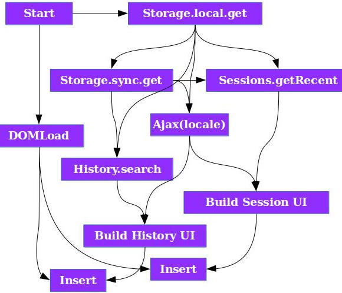

Promise-Aware curry() and compose()
11 September 2015Disclaimer:
I assume you're vaguely familiar with ES6 Promises and functional JavaScript.
Let us begin!
Functional JavaScript is useless. It's a nuisance. A toy. A fruit for thought. But still - useless. Mostly because of Monads.
- Error handling is for the most part incompatible with existing code. You need to wrap throws into Monads.
- Monads are clunky. You need to be aware whether the function returns monad or regular value, you have to manually flatten multiple layers of different monads, chain after every function call, etc.
- Even when libs are preloaded and cached and startup isn't important, it's throughput is still much lower than that of non-functional code
But with ES6 came Promises. Not only do they solve most monadic problems. They came to save us all
- They automatically flatten – when you promise a promise to a value, you get promise to a value
Promise.resolve(Promise.resolve(5)).then(console.log.bind(console)); // Prints 5, not promise of 5
- They automatically catch and convert imperative errors to functional errors – no wrappers required
- They're the standard– they're faster than any JS monad implementation and you don't have to include anything
- You can join parallel promises into one with
Promise.all - They handle both synchronous and asynchronous code
But when using compose() or curry() we still have to manually chain and link functions with .then() or Promise.all()
Which is pretty sad, especially when you compare synchronous function returning value to the same function returning value via promise
| Return Value | Promise Value |
|---|---|
function id(x) {
return x;
} |
function id(x) {
return Promise.resolve(x);
}
|
Why are we discriminating promised values in the functional arrow-based world? Shouldn't they have equal rights? It shouldn't matter if the arrow points to now or into the future!
Imagine...
What if we had compose() that, when fed with a function returning a promise, would automatically convert output to promise and start mapping remaining functions via .then() method?
Example
let elementsFromFile = compose(map(toElement),
param("data"), JSON.parse, asyncLoadFile);
// imperative data extraction
elementsFromFile("elements.json")
.then(function (elements) {
// update the view
}).catch(function () {
// Display friendly message, retry
});
See? Looks like your typical synchronous functional code. But it is async! Only extracting the data in a non-functional way hints that something asynchronous is going on.
Not all functions take in only a single argument, however. That's where curry() comes into the picture. If it finds promises in the argument list, it'll wait for them all to resolve, extract values, call underlying function and return output in a single promise.
let appendInto = curry(function (parent, element) {
return parent.appendChild(element);
});
let showElements = compose(
each(compose(
appendInto(promiseBody()),
toElement
)),
param("data"),
JSON.parse,
ajax);
showElements("elements.json")
.catch(alert("server error"));
But what can you do with it?
Simple async parallel waiting!
Think of parallelized version of shell scripts – you control the flow of the data and you don't care how, when or in what form it's arrived.
Current trend is to go for the .then() train
functionReturningPromise() .then(fn1) .then(fn2) .then(fn3);
Which is meant to be replaced with the upcoming await:
let val = await functionReturningPromise(); val = await fn1(val); val = await fn2(val); val = await fn3(val);
It may look nice at first glance, but it's always a single queue. Wait for one thing, process, wait for the next, process, rinse and repeat. But when you wait for independent events in this way, you're wasting your time.
Here you can easily wait for two, three or more events at once! Even better – you don't have to treat promised values in any special way – curry() takes care of that. And you don't have to remember whether to chain functions with .then or not because of compose().
I've written these, to parallelize waiting in Webkit extension API, where literally every single call is asynchronous. Localization files, local data, sync data, document.body, chrome.sessions, chrome.history, chrome.tabs. Non-API code executes pretty quickly but 90% of the time was wasted on waiting for the async data to resolve. It's a perfect opportunity to parallelize independent waits.
It basically lets me to do this asynchronously and parallely:
And not go immediately insane
Download/Install
You can grab these functions from their GitHub repository